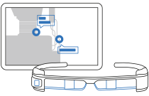
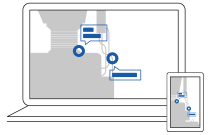
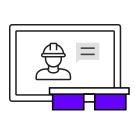
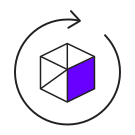
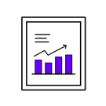
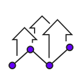
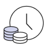
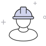
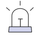
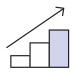

컨텐츠

Remote AR은
AR 화상 통신을 이용하여 ‘현장 작업자’와 ‘원격 전문가’간의
실시간 커뮤니케이션을 도와주는 솔루션입니다.
두 이용자가 멀리 떨어져 있더라도, 증강현실(AR)과 함께라면 마치 같은 공간에 있는 것처럼 느끼며 의사소통하고, 업무를 수행할 수 있습니다.
Remote AR은 다양한 사용 환경에서 최적의 AR 원격 지원 환경을 제공하여 설비 유지보수, 교육, 진료, 설비 모니터링 등 다양한 응용 분야에서 활용이 가능합니다.
-

현장작업자
-
작업자는 원격 전문가에게 현장의 영상을 실시간으로 전송하는 한편, 스마트 디바이스에 표시된 작업 가이드와 함께 유지보수를 진행
-

원격전문가
-
원격 전문가는 수신받은 현장의 영상을 보면서 텍스트, 포인팅, 이미지 등의 부가 정보를 현장 작업자에게 전송하여 유지보수를 지원
-

AUTHORING
- 효율적인 업무 지원
- 실시간으로 현장 영상이 원격 전문가에게 공유되는 한편, 작업자에게 원격 전문가의 지시사항을 빠르고 정확하게 전달할 수 있습니다.
-

SHARING
- 다양한 AR 정보지원
- 복잡한 설비의 특정 부분을 포인팅하거나 텍스트, 드로잉, 이미지, 동영상, 3D 모델을 공유하는 등 기존의 음성 통화 방식보다 정확하고 세밀한 정보 전달 및 의사 소통이 가능합니다.
-

ANALYSIS
- 데이터 수집을 통한 업무 분석
- Remote AR의 부가 기능(이미지 저장 및 화면 녹화)과 부가 서비스 (이용 데이터 분석 및 이벤트 기록 자료 제공)를 통해 원격 지원 업무의 정보화가 가능합니다.
-

CONNECTION
- 생산성 증가 및 기업의 경쟁력 강화
- Remote AR은 다양한 사용 환경에서 최적의 AR 원격 지원 환경을 지원하여 설비 유지보수, 교육, 진료, 설비 모니터링 등 다양한 응용 분야에서 효과적으로 활용이 가능합니다.
BENEFIT
-

- 시간 및 비용 절감
-
출장, 외근 등 이동시간 감소 및 비용 절감
고가의 통신 비용 없이 유지보수 지원
-

- 업무 효율성 극대화
-
보고서 자동 작성 기능을 통한 문서 작성 업무 감소
신속한 업무 협의 및 의사결정
-
- 신속한 의사결정
-
작업자와 원격 전문가가 같은 시선 정보를 공유 (커뮤니케이션 오류 감소)
다양한 방법을 통한 커뮤니케이션 강화 (음성, 문자, 포인트, 드로잉, 이미지 전송)
업무 지침 전달의 정확도 및 신뢰도 향상
-

- 위험 감소
-
출장으로 인한 사고위험 감소
-

- 생산성 증가, 기업의 경쟁력 강화
-
AS 비용 절감을 통한 제품의 가격 경쟁력 확보
경비, 시간절감, 효율성의 극대화
-

- 고부가 신산업 창출 가능
-
AR/VR 소프트웨어, 하드웨어 관련 신산업 창출 및 시장 선점